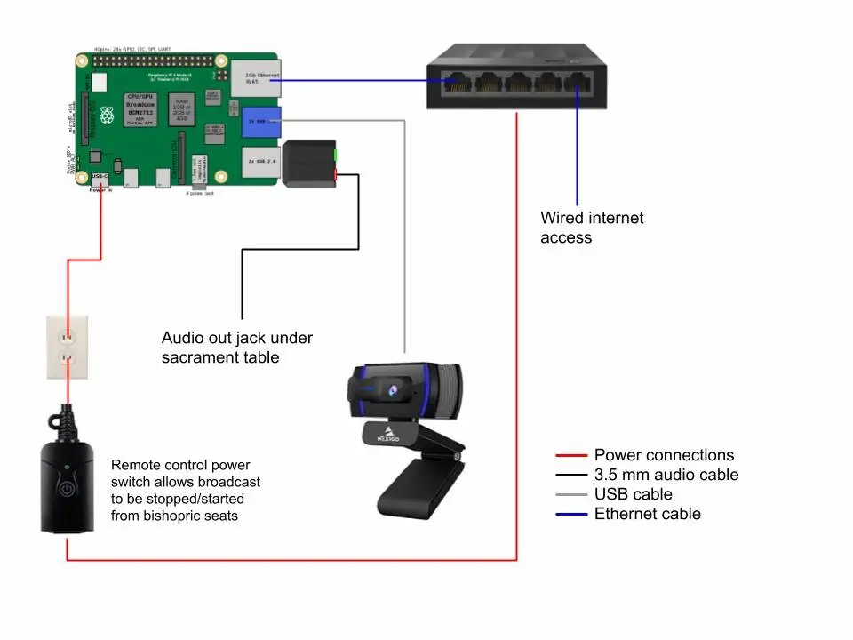

The Webcast Project Quickstart
- Download the prebuilt image for a Raspberry Pi 4.
- Write the image to an SD Card using the Raspberry Pi Imager
- Install as shown below. 
- We strongly suggest setting a static IP through DHCP. The device's name will be webcast-pi.
- Point a web browser to the IP address of the PI after it boots from the SD Card.
- Login using webcast/alma3738
- Go to the "Webcast Config" section of the Cockpit UI and enter the appropriate configuration details.
- Click submit to save the configuration.
- Click start to enable the service.
Recommended Parts List for a Chapel
- Raspberry Pi 4 - 4GB
- Raspberry Pi 4 Armor Case with Dual Fan
- Raspberry Pi 4 Power Supply
- MicroSD Card > 8GB (Speed Class 10)
- USB Sound Adapter
- 3.5mm Audio Cable
- USB Webcam (1080p, narrow FOV & Tripod mount)
- USB Extension Cable
- Tall Camera Mount (Tripod OR Clamp Mount)
- Gaffers Tape (if running cables across walkways)
- Remote Control Outlet
- Ethernet Switch
The last 2 items are optional. We use the remote control outlet on the network switch to turn off/on the stream without having to reboot the Pi. You could use the power switch on the Pi directly or use the web interface to stop and start the stream from a smartphone, tablet or laptop. We chose the hanging remote control outlet with an indicator light so that it sat just above the floor where the bishopric could see the light and control it from their seats.